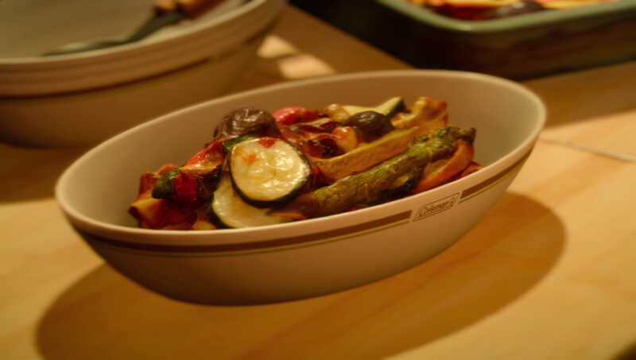

Final Fantasy XV's Lasagna al forno

Lasagna with beef, vegetables and italian cheese
Time: 2 hours 45 minutes; 12 servings.
Have you ever wanted to be inside a videogame and do crazy videogames things? If you answered yes this recipe isn't for you, since it's based on a real life food.
However the original recipe from Final Fantasy XV does include monster meat, Jabberwok sirloin to be precise, so if you find that you should totally use it instaed
of beef!
If you can't find a Jabberwok don't worry, these are the alternative ingredients:
- dry lasagna 450g
- ground beef 680g (orJabberwok)
- italian sausage 450g
- 1 zucchini, diced
- 1 squash or pumpkin, diced
- 1 large tomato, diced
- ricotta cheese 850g
- parmigiano cheese, grated 200g
- mozzarella cheese, shredded 450g
- 1 onion, chopped
- 2 cloves of garlic, sliced
- basil, chopped 2 tbsp
- oregano, 2 tbsp
- 3 bay leaves
- tomato paste, 170g
- tomato sauce, 950ml
- 2 eggs, beaten
- extravirgin olive oil
- salt and pepper to taste
- chilli pepper (optional)
Instructions:
- Cook the pasta in plenty of boiling salted water until pliable and barely tender, about 10 minutes. Stir to prevent sticking. Drain the pasta thoroughly, coat with olive
oil keep them moist and easy to work with.
- Coat a large skillet with olive oil. Brown beef and sausage until no longer pink, about 15 minutes. Put the meat aside and in the skillet saute over medium heat, onion,
garlic and herbs for 5 minutes. Stir in the tomato paste completely. Add the chilli pepper now if you like. Set aside to cool.
- In a mixing bowl, combine ricotta, parsley and oregano. Stir in beaten eggs. Add parmigiano, season with salt and pepper.
- Preheat the oven to 180°C.
- To assemble the lasagna: coat the bottom of pan with a ladle full of tomato sauce. Arrange 4 pasta pieces lengthwise in a slightly overlapping layer on the
sauce. Then, line each end of the pan with pasta. This forms a collar that holds in the corners.
- Spread 1/2 of the meat mixture over the pasta. Dollop 1/2 of the ricotta mixture over the meat, spread to the edges with a spatula. Sprinkle 1/2 of the mozzarella on top
of the ricotta. Top with a ladle full of tomato sauce, spread evenly. Repeat with the next layer of the pasta, meat, cheeses and sauce.
- Top last layer with pasta, diced vegetables, sauce and shredded mozzarella and parmigiano. Tap the pan to force out air bubbles.
- Bake for 1 hour. Remove from oven. Let the lasagna rest for 30 minutes so the pasta will settle and cut easily. Cut into 5cm squares and serve. Yum!
Go back to main page